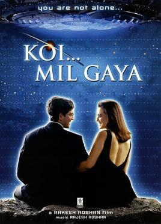

Koi mil gaya

Koi... Mil Gaya (English: Someone... I Found) is a 2003 Indian science fiction film directed by Rakesh Roshan (who also has a cameo role), starring Hrithik Roshan and Preity Zinta in the lead roles with Rekha playing an important supporting role. Initially, Aishwarya Rai was offered the role of Nisha. After she declined, the role went to Zinta.The film was released on 8 August 2003. It was shot in Kasauli, Nanital, Bhimtal and in Canada.